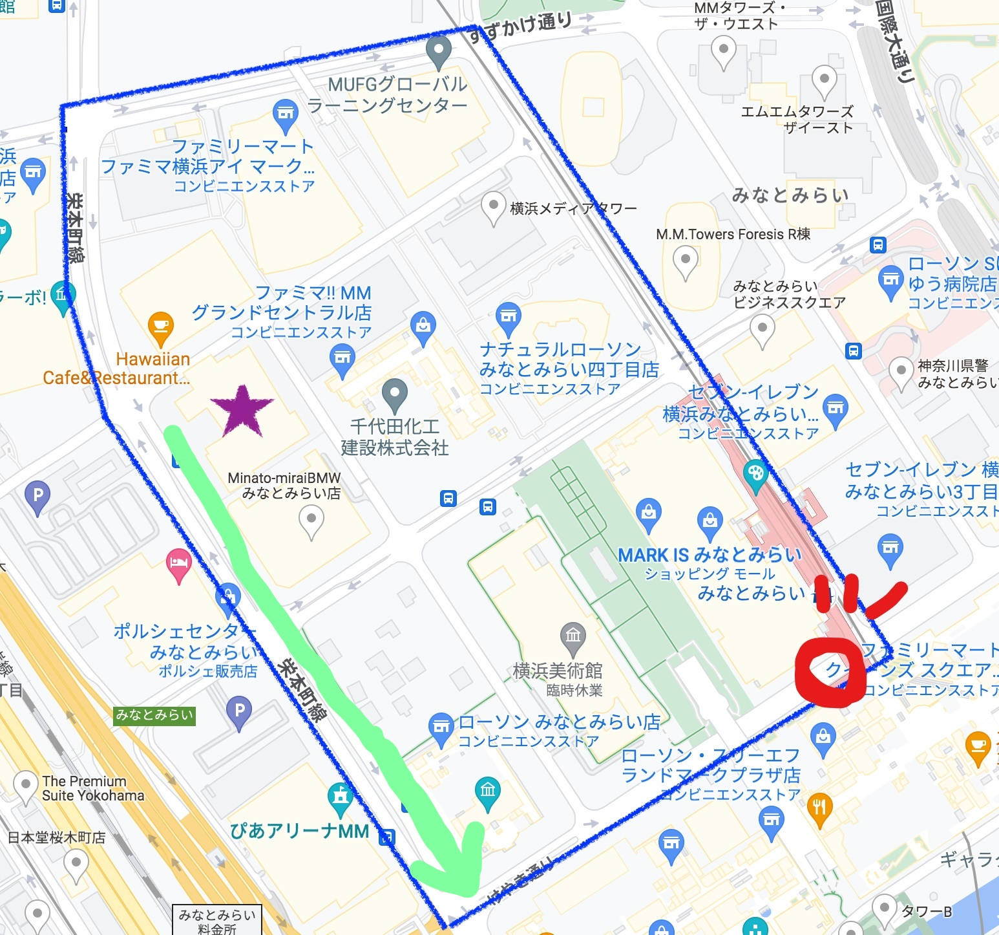
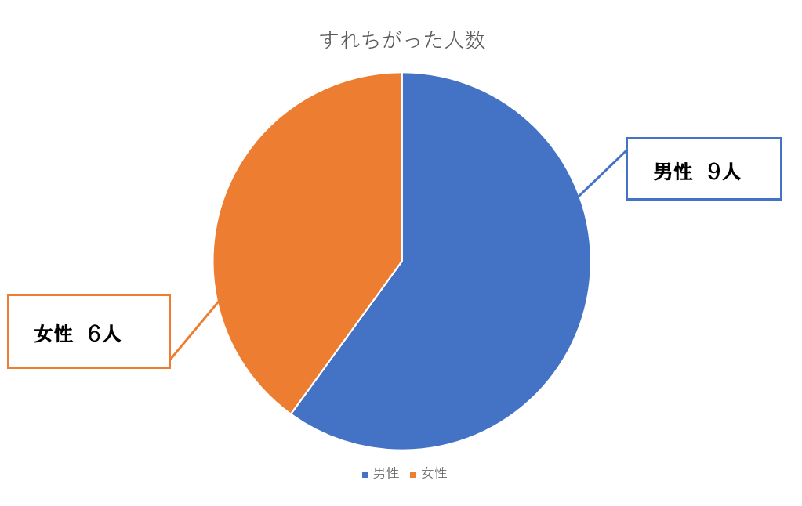
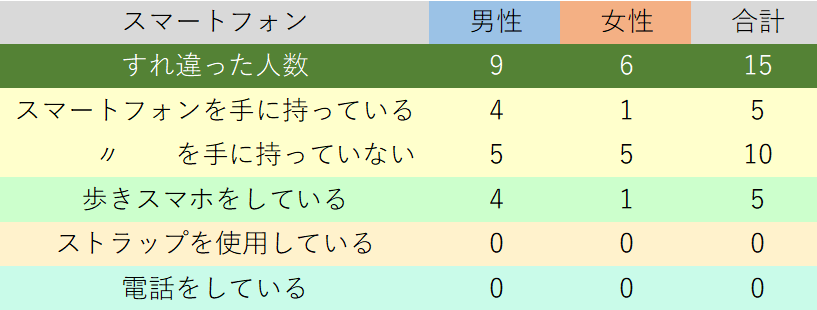
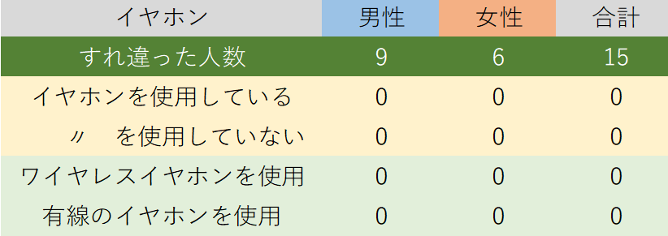

観察（移動観察）
1.移動観察

大学の前から緑の線に沿って移動観察を行った。
※観察の開始時刻は13:40(2022.10.18)
2.観察の焦点
観察の焦点は、スマートフォンを手に持っているか、歩きスマホをしているか、ストラップを使用しているか、
また、イヤホンを使用しているか、そのイヤホンはワイヤレスか否か、などである。
3.観察結果
この観察ですれ違った人数をグラフにした。

対象となる人が15人のみだったが、結果は次のようになった。

男性はすれ違った人のうち、およそ半数の人がスマートフォンを手に持っていた。
また、その手に持っていた人たちは全員が歩きスマホをしていた。
しかし、女性は6人中1人しか手に持っておらず、歩きスマホをしていたのもその人1人のみだった。
ストラップを使用している人や、電話をしている人は0人だった。
なぜ、男性は手に持っていて、女性は手に持っていないのか考えてみるが、この観察だけでは考察ができない。
そのため、次に観察をするなら、すれ違う人の年齢層や、服装、職業、持ち物まで考慮して観察する必要があると考えられる。

イヤホンを使用している人も0人であった。これは単純に対象の人数が少なかったために、観測できていないと考えられる。
しかしながら、観察者は3人くらいはいるだろうと予想していたため、とても驚いた。
このイヤホンの使用についての観察を次にするなら、もっと人通りの多いところや、通勤・通学の時間帯に変更して観察する必要がある。